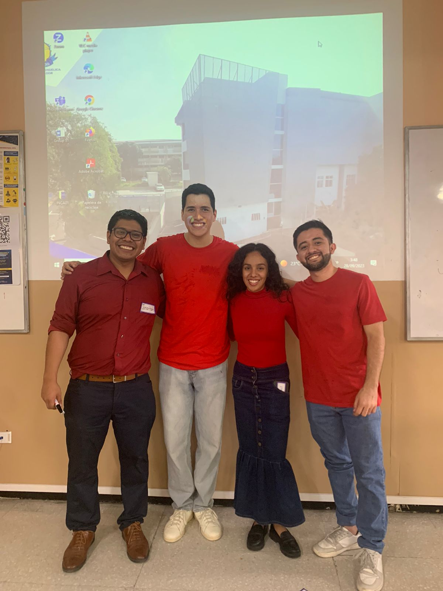
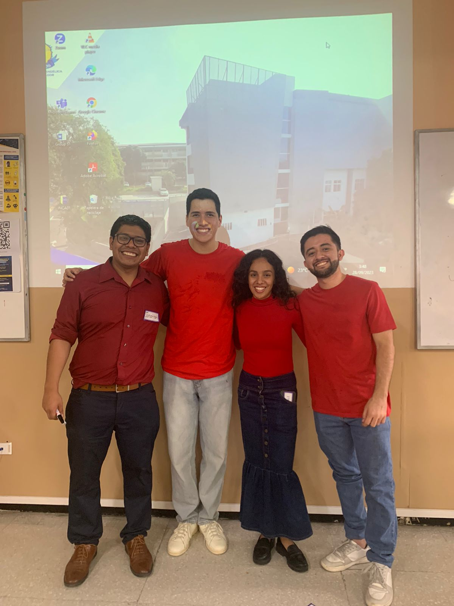

Greetings, dear readers! 😊
We started our class with a really good warm-up. We used a YouTube video where we had to answer questions and identify monuments and countries. After that, we moved on to explain the topic, which was the verb "to be" in negative and interrogative forms. Once we had explained it, we were allowed to practice what we had just learned with some sentences and a worksheet. After that, we did some activities to keep us motivated. We were also asked to work in pairs, which gave us the chance to practice orally during the class.
Additionally, Professor Jonathan recounts a recent teaching experience where he and his group had the opportunity to instruct a class of visiting students. The lesson focused on numbers and objects found in the classroom.
The class began with a warm-up conducted by Professor Jonathan, who assessed the students' understanding of numbers and classroom vocabulary through questions. His teaching skills made the topic accessible, and he covered numbers from 0 to a million. Subsequently, Josh took over and helped the students apply numbers in real-life situations, which was well-received by the students.
Professor Jonathan then took charge of teaching classroom objects, using images to enhance comprehension and pronunciation practice. The students actively participated throughout the lesson. Rhodri followed, assisting students in using their newly acquired vocabulary in sentences.
After the class, the instructors ensured that the students had a solid grasp of the topic. They conducted an exercise that required students to quickly write down the vocabulary they had learned. To conclude, there was a wrap-up session where students shared what they had learned.
I felt nervous at the beginning, but as time went on and we gained more experience teaching English, both my colleagues and I became more confident in ourselves.
Furthermore, I believe we did a good job, and the students learned a lot. It's rewarding to see their progress and enthusiasm for learning English grow over time. In conclusion, I'm proud of our journey as teachers and the positive impact we've had on our students' language skills. Here's to more successful teaching experiences in the future. Goodbye👋